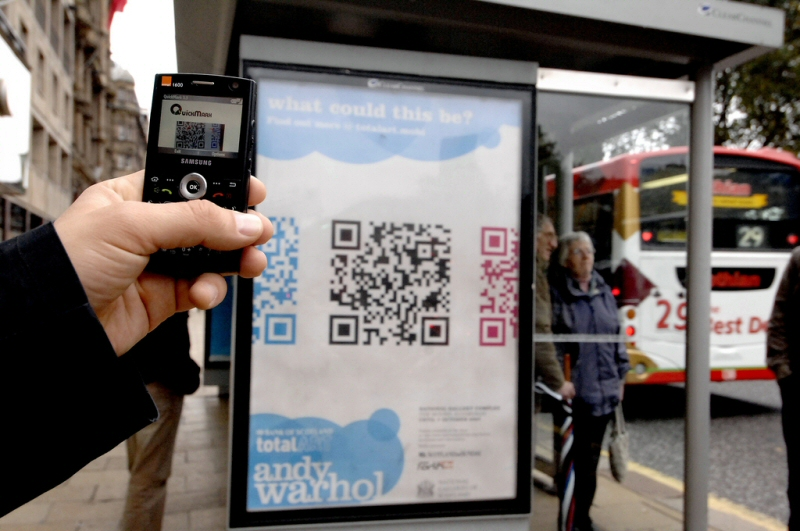

POSSIBILIDADES DA PHYSICAL WEB NA INTERNET DAS COISAS

Como funciona a Web
- A World Wide Web possibilitou a interconexão entre computadores
- As tecnologias aplicadas nos navegadores tiveram grades avanços
- ...mas, tem uma coisa que não nos navegadores...
Interação entre a web e o mundo físico
Será que realmente funciona ?
E se as "coisas" possuíssem a capacidade de se comunicar e fornecer informações sobre elas ?
Physical Web
- Propõem aplicar os mecanismos da web no mundo real
Como isso funciona?
Web Tradicional
Web física
Porque utilizar a Physical Web na IoT?
- Haverá uma explosão no numero de dispositivos inteligentes
- Imaginar que cada dispositivo terá seu próprio aplicativo nativo não é algo realista
- Existem casos onde um não há a necessidade de um aplicativo nativo
- A Physical Web não propõem a substituição dos aplicativos nativos, apenas possibilitar a interação onde seu uso não é algo pratico
- Anunciado em abril de 2016
- Protocolo aberto
- Define um formato de mensagem para ser enviada por uma baliza de proximidade (BLE)
- Eddystone-URL possui apenas 18 bytes para o envio da url
bleno
Modulo Node.js - Implementa o BLE peripherals.
github.com/sandeepmistry/blenoPossibilidades da Physical Web na IoT
- Transmitir a URL de uma pagina com informações sobre o dispositivo
- As URLs são facilmente compreendidas e bastante flexíveis
- Elas podem apontar para a página HTML informativa , um web aplicativo ou ser utilizada por aplicativo nativo no telefone
- As URLs podem ser estáticas ou dinâmicas
E a segurança?
Tecnologias amigas
- Progressive Web Apps
- Web Bluetooth
Já posso usar a Web Física no meu smartphone?
Demonstração
Obrigado!
Felipe Cézar - felipe.antunes@ifnmg.edu.br
Thalis Antunes - thalisantunes@gmail.com
Giuliano Viana - giuliano.viana@ifnmg.edu.br